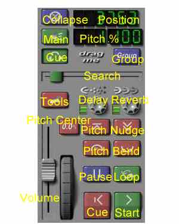
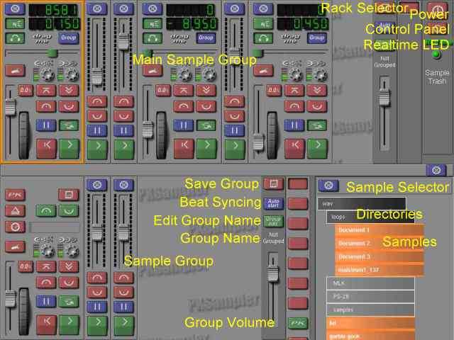

PKSampler Quick Reference
The Sample

Control Descriptions:
- Collapse button: Collapse the widget.
- Position display: Shows the position in kiloframes.
- Pitch display: Shows the pitch delta in percent.
- Main Zone button: Toggle output to main zone.
- Cue Zone button: Toggle output to cue zone.
- Group button: Toggle grouped controls with other samples in group.
- Search slider: Shows/sets sample position.
- Tools button: Toggle tool view.
- Delay knob: Set delay dry/wet value (disabled).
- Reverb knob: Set reverb dry/wet value (disabled).
- Pitch Center button: Set the pitch value to 0.0%.
- Volume slider: Set the output volume.
- Pitch sheel: Set the pitch value.
- Pitch Nudge buttons: Increment/decrement the pitch value.
- Pitch Bend buttons: Temporarily bend the pitch value.
- Pause button: Stop playback at the current position.
- Loop button: Toggle whether or not the sample will start over and continue playing when it reaches the end.
- Cue button: Stop playback and reset the position to the beginning.
- Start button: Immediately start playing from the beginning, regardless of whether or not the sample is already playing.
The Main Window

Control Descriptions:
- Main Sample Group: A Sample Group where the samples initially go.
- Rack Selector: Switches between possible rack components, like the Main Sample Group, or a PKStudio Production Rack (PKStudio required).
- Power button: Quits the PKSampler.
- Control Panel button: shows the control panel.
- Realtime LED: indicates if the engine is running with realtime priority (a good thing).
- Sample Group: A group of samples that can can provide automatic beat matching and synced controls like volume, pitch, and start/stop
- Save Group button: Save the sample locations and tempos, useful for background tracks.
- Beat Syncing button: toggles automatic starting of grouped samples when other samples in the same group loop to their beginning.
- Edit Group Name button: Pops a dialog to set the group's name. When a group name is set, the group merges with all other global groups with the same name. These groups can be on the same machine, or on other networked machines.
- Group Volume slider: Adjusts the volume of all of the samples in the group.
- Sample Selector: Used to open samples. Drag the grey space to the right of the files and directories to scroll the view. Directories can be added via the Control panel.
- Directories in Selector: Shows directories, click to open/close.
- Samples in Selector: Click once to open the sample in the Main Sample Group.
Comments/Suggestions: Email Patrick